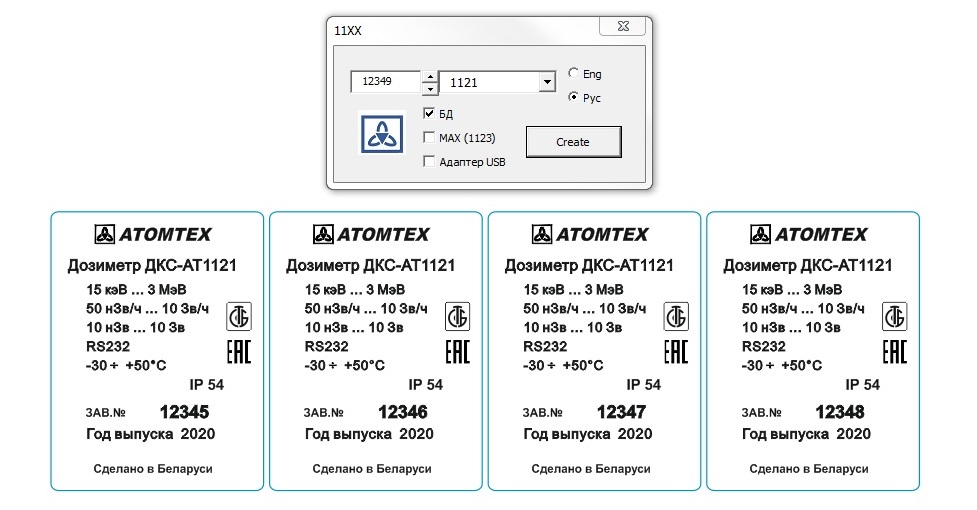

Как пользоваться макросом для наклеек
Atomtex Tools

Плюшки при работе с 1117
Работаем с СРК
Если надо сделать очень много одинаковых наклеек
Главное окно макроса. Вообще основная его задача, это запуск других окон для конкретного типа БД (см. пункт 11) и для вырезания контуров (см. пункт 8). Другие его функции тоже удобные, но используются реже:
- 1 — номер для поиска. Макрос будет искать этот номер, чтобы переименовать (подробнее здесь)
- 2 — номер, в который будет переименован найденный номер [1]
- 3 — переименовать [1] в [2]
- 4 — включение автоматического выбора следующего найденного номера для переименования. Если поставить флажок Auto Next, то после переименовывания первой наклейки макрос выберет следующую, переименует, выберет следующую... и т.д., т.е. Процесс переименовывание будете происходить в автоматическом режиме. Если флаг не стоит, то после того, как макрос выберет следующую наклейку нужно будет каждый раз нажимать Rename. Это бывает удобно, когда номера идут не по порядку и приходится каждый номер править вручную, при этом не нужно каждый раз искать в Кореле следующую наклейку, а просто нажатием Rename макрос автоматически перейдет на следующую
- 5 — создать массив из выбранного объекта с высотой [13] и шириной [14]
- 6 — если выбрать, то перед созданием массива наклейка будет повернута на 90 градусов (низкие и широкие наклейки удобнее размещать повернутыми на 90 градусов)
- 7 — при копипасте [12] наклейка будет расположена на расстоянии, указанном в поле "Step"
- 8 — полезная кнопка: при нажатии, со страницы будут вырезаны ВСЕ границы, окрашенные голубым цветом и помещены в буфер обмена. После нажатия нужно выбрать страницу документа, в котором будут располагаться контуры и выбрать "Вставить" (Ctrl+V)
- 9 — когда-нибудь доделаю, пока не работает
- 10 — при распечатывании, наклейки расположенные в середине и внизу страницы немного (миллиметр может) смещаются относительно их контуров. Для больших наклеек это не важно (это не увидеть), а для очень маленьких (адаптер USB, или БДКГ-02, например) это уже критично. Исправить это можно или чуть сдвинув контур вверх, или, выделив наклейку, нажать эту кнопку. Макрос чуть сдвинет контур относительно наклейки. Не следует пользоваться сдвигом в самом верхнем ряду, там расхождения нет
- 11 — выбор типа БД для распечатывания, для каждого из них открывается специализированная форма
- 12 — выделенный объект, при нажатии на эту кнопку, будет скопипастен в соответствующую сторону (влево/право/вверх/вниз)
- 13 — высота массива, сгенерированного в [5]
- 14 — ширина массива, сгенерированного в [5]
- 15 — после переименовывания в [3] серийный номер [2] будет автоматически увеличен на 1. Если убрать флажок Auto Increment, то во всех наклейках после переименования будет номер, указанный в [2] (если нужно установить одинаковый номер в наклейках или, например, переделать год). Когда флажок стоит, то при выборе каждого следующего номера этот номер будет увеличен на 1.
Создание наклеек на примере 1123
- Запустить Atomtex Tools
- нажать кнопку 11ХХ (здесь расположены 1103, 1121, 1123, 1127 и ещё всякое разное)
- Выбрать из списка 1123
- установить серийный номер, исполнение (рус/англ), если нужно добавить MAX и адаптер USB
- Нажать Create.
- Комплект готов!

Чаще всего нужно вывести несколько наклеек, тогда после нажатия на Create, НЕ СНИМАЯ ВЫДЕЛЕНИЕ, смотрим на форму. Форма автоматом увеличивает номер на единицу, поэтому, если нужно вывести несколько наклеек с номером по-порядку, то устанавливаем параметры и первый серийный номер и просто тыкаем несколько раз Create (первую наклейку будет немного подтупливать, макрос в это время открывает файл с шаблонами, последующие выведятся без затупа), с каждым тыком будет выведена наклейка в ряд после предыдущей
Плюшки при работе с 1117
При работе с 1117 выводится комплект наклеек, причем можно задать от какого до какого номера будут выводится комплекты.
Например: выводим 3 комплекта 1117, в составе: БДКГ-01, БДПБ-01, БДКН-01, русские, с номерами комплектов — 17430, 17431, 17432:
Ещё плюс — все наклейки комплектов будут отсортированы по типу БД, так удобно их растусовывать по листу
Работаем с СРК
В этом модуле сначала формируется список блоков с номерами и только после выводится сразу весь список
Выбрать номер СРК и номер первого блока. По очереди выбрать входящие в состав СРК блоки. С добавление очередного блока в список на форме будет добавляться текущий блок с его серийным, номер будет автоматически увеличиваться на 1. Если блок был введен ошибочно, его можно удалить, нажав кнопку «Стереть последний». После того, как в список будут добавлены все блоки, проверить по заказу номера, если порядок — нажать «Создать»
Все наклейки выводятся по 4 в ряд — это как раз столько, сколько влазит на лист по ширине наклеек самого распространенного размера
Если надо сделать очень много одинаковых наклеек
Если надо сделать очень много одинаковых наклеек с номерами, например, от 1000 до 1119 (120 шт). Можно, конечно, накопипастить это дело вручную, а потом полчаса заниматься вставкой номеров. Но лучше макросом:
- сделать шаблон наклейки с номером 0000 (номер не принципиален, по нему будет производится поиск), например прямоугольник с текстовым полем (это может быть любая наклейка):
- выделить наклейку. В форме задать размер будущего массива наклеек, например 6 Х 20 (120 шт). При желании изменить Step. Если наклейку необходимо повернуть на 90 градусов (может так лучше влезут), отметить флажок Rotate
- Выделить наклейки, в которых необходимо изменить номера.
- Выбрать номер по которому будем искать (0000), написать первый переименованный номер (1000), отметить Auto Increment и Auto Next, нажать Rename
- Дождаться «All Done!” . После нажатия ОК, все наклейки станут переименованными